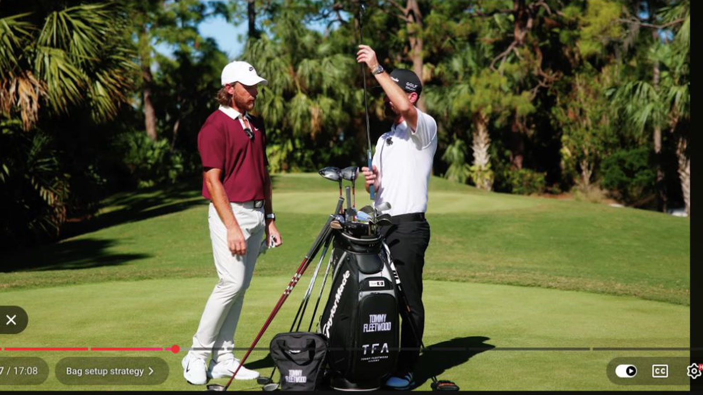
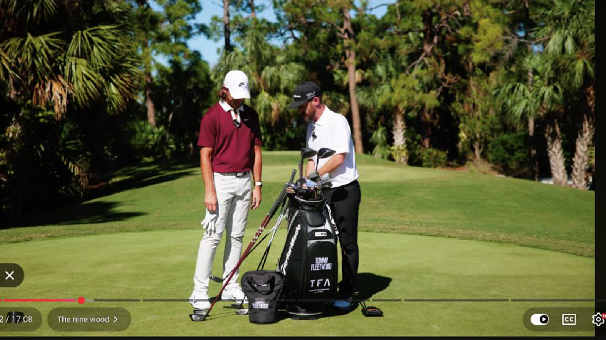
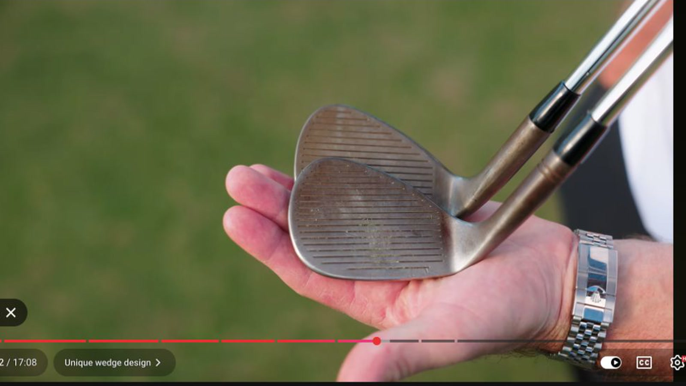
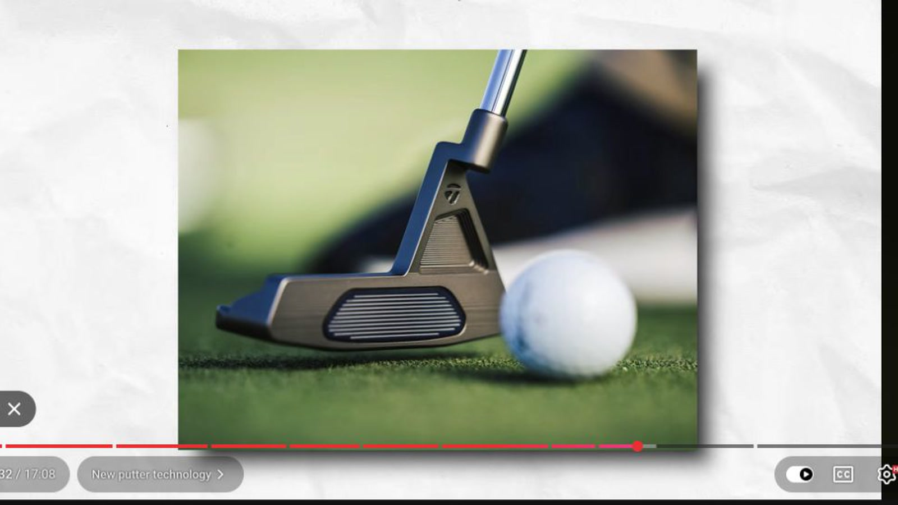
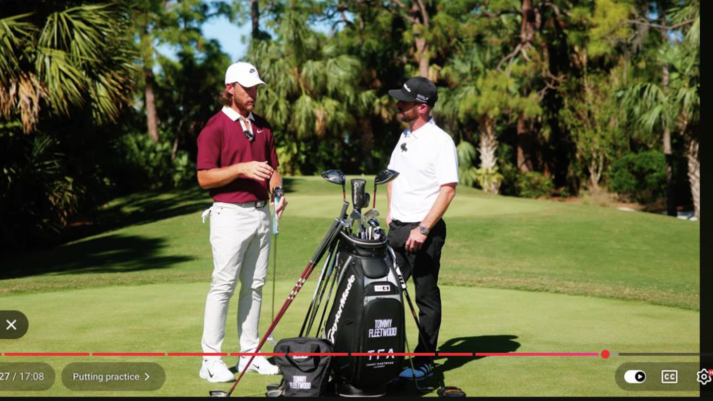

Executive summary
The bag is organized around roles, not model names
Fleetwood treats equipment as a connected system. Driver, mini driver, 5-wood, irons from 4 through pitching wedge, 52° and 60° wedges, and putter form the stable core. That accounts for 13 clubs. The last place rotates among a 9-wood, 3-iron, or extra wedge according to the course, weather, turf, and shots he expects that week.
The same logic governs component changes. He wants one shaft family to flow through the woods, with weight increasing as the shafts get shorter. He has used Project X 6.5 iron shafts since he was 14. His grips differ by section of the bag because each texture has earned a familiar response. A new part must improve one property without making the rest of the bag feel unrelated.
The strongest lesson arrives during the putter discussion. A fitting performed while the player is swinging or stroking well only proves the club works in ideal conditions. Fleetwood practices long enough to expose his normal mistakes. He then judges how the club behaves when he pulls the stroke inside, strikes the toe, or has to manufacture a score under pressure.
Evidence boundary. The video shows a testing-stage bag rather than a frozen tournament specification. Fleetwood names roles, feel, and several components, but not every exact loft, length, swing weight, or final model. The channel description contains an older specification block that does not fully match the clubs discussed on screen, so this article treats the spoken walkthrough as the primary source.
The 14-club map
Thirteen clubs stay put and one slot solves the week's problem
| Bag area | Status | Job | Decision rule |
|---|---|---|---|
| Driver | Normally fixed | Primary tee club with multiple flight options | Must remain workable rather than serve one launch window |
| Mini driver | Normally fixed | Controlled tee option between driver and fairway wood | Stays because it has become a reliable scoring club |
| 5-wood | Normally fixed | Long approach club with a wide carry and shape range | Must cover stock, hotter, and soft-fade flights |
| 4–PW irons | Fixed | Continuous iron progression | Project X 6.5 feel remains familiar |
| 52° and 60° | Fixed | Scoring and greenside coverage | Known loft, lie, sole shape, and face presentation |
| Putter | Fixed role | Flow-neck blade feel with added face stability | Must preserve rotation and sound while helping mishits |
| 9W / 3i / wedge | Rotating 14th slot | High soft landing, penetrating long iron, or extra short-game gap | Chosen after practice rounds reveal the course's repeated demands |
This is a useful way to read a tour bag. The question is not whether a 9-wood is better than a 3-iron. Each creates a different flight from a similar distance. The 9-wood climbs higher and lands softer. The 3-iron produces a different window and may suit wind, firm turf, or tee shots. An extra wedge shifts capacity to shorter approaches. The course decides which problem deserves the last slot.

Fairway-wood system
The 5-wood earns its place by covering more than one yardage
Fleetwood says fairway woods matter because he is not among the very longest hitters. On par fives, the second shot often affects scoring. His 5-wood must therefore do more than produce one optimized launch-monitor number.
The stock carry sits around 250 to 255 yards. He also wants a hotter flight when he needs more, plus a softer fade that can land at roughly 235 to 240. This span turns one club into several approach tools. The head and shaft must let him change speed and face delivery without making the result unpredictable.
He is testing two head constructions. A bonded head gives the club team more freedom to bend lie angle, while an adjustable version lets the player change settings. Fleetwood sees value in both. He likes the fitting flexibility of the bonded head, but also values the certainty of a configuration that can be set and left alone.
The shafts follow another rule. As the club gets shorter, the shaft gets heavier, but Fleetwood prefers the same model or at least a very similar bend profile across driver, mini driver, and fairway wood. Three unrelated shaft feels would make the transition through the top of the bag resemble three clubs with different grips and weights.
The specialist
The 24° 9-wood overlaps the 4-iron in carry but not in flight
Fleetwood places the 9-wood between roughly 230 and 240 yards. Its carry can sit close to his 4-iron, but the clubs do different work. The 9-wood reaches a higher peak, arrives on a steeper angle, and can stop more quickly on a green. It is also easier to launch than a long iron.
That overlap is intentional. Gapping is not only a ladder of carry numbers. Two clubs can travel a similar distance and remain useful when their trajectories, landing behavior, and common lies differ. Fleetwood does not treat the 9-wood as a hot distance club or a club he expects to hit constantly from the tee. It is a specialist for approaches that require height and softness.

Fitting implication. Fit a 9-wood around the shot it must create. Length, loft, and shaft should produce a comfortable launch and reliable landing window. A standard chart matters less than whether the club solves a repeated on-course problem.
Continuity through the set
Old components stay when they preserve a trusted reference
Fleetwood has used Project X 6.5 shafts in his irons since age 14. Longevity is not presented as nostalgia. The shaft gives him a reference against which a new head, loft, lie, or grip can be judged. Changing one variable at a time makes the result easier to understand.
His grip choices also preserve section-specific feel. Softer Iomic grips protect his hands through high practice volume and remain on the irons. The woods kept firmer cord grips because the softer option never felt right there. The wedges followed the same familiar cord feel. The setup is not visually uniform, but it is functionally consistent for the player.
Loft and lie receive weekly attention on the tour truck. Fleetwood knows how each iron and wedge should start and react. If the flight looks wrong on the range, he checks the measurements even after the clubs have already been inspected. He says half a degree, and sometimes a quarter of a degree, can change what he sees.
Wedge geometry
The 60° face gives him a clear center and a rounded path under the ball
Fleetwood plays his wedges relatively flat, but he does not chase course conditions by changing lie every week. He has target loft and lie numbers and expects the ball to respond accordingly. Too flat is still possible. When pitch shots begin falling right, the geometry needs checking rather than another compensating swing thought.
The 60° has full-face grooves, a rounded leading edge, and a visible belly in the sole. Fleetwood dislikes a sharp leading edge that appears to sit halfway up the ball. The rounded shape gives him confidence that the club can move beneath it. He has experimented with removing heel material, but too much relief makes the head look offset to him.
Full-face grooves create visual continuity with his high-toe 52°, yet they remove the normal blank areas that help locate the center. Fleetwood uses the partial bottom groove as the alignment reference. That small detail keeps the face centered and reduces the tendency to address the ball toward the toe.

The shaft transition is deliberate too. His irons use 6.5 shafts, while the wedges use S400. The scoring clubs retain their own weight and response rather than copying the iron setup without testing.
Putter design
A flow-neck blade gains stability without asking him to relearn the stroke
Fleetwood enjoys testing putters, but his best performance repeatedly returns to a familiar blade shape with a flow neck and known offset. Large stability designs can help the face resist twisting, yet they often alter rotation, feel, or sound. He wanted stability without giving up the behavior that made the blade trustworthy.
The answer is a custom Truss-style support joined to a flow neck. Earlier Truss models behaved more like oversized plumber's necks and sat closer to center-shafted. Fleetwood asked whether the structural support could work with his preferred neck. TaylorMade built molds, and the resulting head retains the shape and offset he knows while adding support behind the face.

He chooses the firmest of the available inserts because its ball speed and sound most closely resemble the putters he has used for years. His thicker grip fits the left palm and supports a claw grip. The left thumb and forefinger form a line he relates to the face. The standard shaft remains because the head now supplies the added stability; a different shaft could help, but it would introduce another tradeoff to test.
The real fitting test
Equipment has to survive the player's ordinary mistakes
Fleetwood rejects the idea that a few good swings complete a fitting. A club can look excellent when timing, strike, and speed are all working. Tournament golf includes pressure, fatigue, and days when the motion drifts. Those conditions reveal whether the design is useful.
With the putter, his tendency is to pull the stroke inside and strike toward the toe. He needs enough repetitions to encounter that miss and learn the result. The same test applies throughout the bag. A club earns trust when the player knows how it reacts to an imperfect delivery and can still plan a playable shot.

The fitting question changes. Do not ask only which club produces the best shot. Ask what happens to carry, curve, launch, and strike when your common miss appears. The useful club keeps the bad result inside a range you can manage.
A practical fitting playbook
Build a bag around repeatable jobs
- Write the job before testing the club. Define the carry window, launch, landing behavior, common lie, and tee use. A 9-wood and long iron can share distance while solving different jobs.
- Map the stable core. Identify the clubs that cover nearly every course. Leave the remaining slot for a repeated condition rather than carrying overlapping clubs by habit.
- Change one component at a time. Keep a known shaft, grip, or head as a reference so the effect of the new variable is visible.
- Test several flights. A fairway wood should prove stock carry, a lower or hotter option, and a controlled shorter flight if those are part of its job.
- Include the normal miss. Record strike, carry, curve, and start line after enough swings for timing to degrade. The worst useful result matters more than the single best number.
- Recheck geometry. Loft and lie can move through use. If a familiar club begins producing unfamiliar flight, measure it before changing technique.
My take
Fleetwood optimizes the transitions between clubs
Many equipment discussions isolate each club and ask whether it is fast, forgiving, or popular. Fleetwood keeps returning to the transitions. Does the shaft feel connect to the next wood? Does the 9-wood add a trajectory that the 4-iron cannot? Does the 60° look like the 52°? Does added putter stability preserve the rotation and sound he recognizes?
That is the deeper structure of the bag. The clubs do not need to match visually or come from one product generation. They need to hand the player from one distance and shot type to the next without forcing a new set of instincts. The final proof is not a perfect launch-monitor session. It is knowing what the club will do after the swing stops cooperating.
Source and method
What this article is based on
- trottiegolf · Tommy Fleetwood - What's In the Bag 2025. Primary transcript and visual source.
Method: 542 public English-caption rows were reviewed across the full 17:08 video. Six direct frames were captured at 1600x900. Distances and club roles come from Fleetwood's spoken walkthrough. Exact specifications not stated in the video are not inferred from the older bag list in the description.